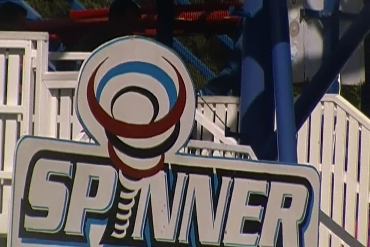

| |
Skara Sommerland Review
Skara Sommerland is a fun little small park that for a long time, most enthusiasts had never heard of. Hell, some might still not be familiar with this park. But those who are familiar with this park are familiar with it for solely one reason. Yep. This is the park of Tranan, the worlds only S&S Free Fly Coaster. Now I don't want to talk too much about the ride here as I have an entire Tranan review down below, but it's kind of hard as Tranan is what makes the park the park. It's what drives the enthusiasts out to it. So that's kind of hard. I know some would say that it's like talking about Holiday Park without bringing up Expediton Ge Force. And while I get where they're coming from as most enthusiasts only really care about Holiday Park for their star attraction, one of the best coasters in the world, it doesn't really work as Holiday Park has a lot of other fun stuff to do and seems to be expanding. Skara Sommerland...without Tranan, seems like more of a credit whoring park. I mean, their best coaster that isn't Tranan, is a Maurer Spinning Mouse. Hell, that's their ONLY other coaster (not including Pseudo Credits). And the other rides, they just seem kind of bland and average. Nothing special. Hell, the only other thing that sparked my interest in this park was their water park, which really did seem cool. There's other fun stuff that I'll gladly go through in the rest of the review.
Rollercoasters
There is a link to a review of all the Rollercoasters at Skara Sommerland.
Top Coasters
Tranan Review

Family Coasters
Spinner Review

Powered Coasters
Gruvbanan Review

Flat Rides
Here are the reviews of all the Flat Rides at Skara Sommerland. Now I didn't ride a single flat ride here, but I still saw a couple flat rides. Nothing special, but nonetheless, I saw some. The main one that I saw was a breakdance themed to cows. Mmm. Hamburger Meat. The ride. But seriously, spinning cows is a cool breakdance theme. They also have some chairswings, a troika, some teacups, bumper cars that are apparently located in what looks like a really cool building. Oh, and a Rockin Tug. Yeah, none of those stand out. But for a small little park like this, they'll do fine.
 Sorry. But this breakdance is not Vegan friendly.
Sorry. But this breakdance is not Vegan friendly.
Water Rides
Here are the reviews of all the Water Rides at Skara Sommerland. There aren't exactly a whole lot of water rides here. In fact, there's only one water ride. A log flume. It's an intersting log flume. It doesn't look like anything special. Small little log flume with some whale boats. Just a flume with a lift and a drop. The layout sucks. But here's one thing to take away from riding this log flume. When they tell you to brace, you better brace because they're not pulling cover-your-ass measures here. Hopefully they expand and possibly add another water ride.
 The stop is worse than the splash.
The stop is worse than the splash.
Water Park
Here is the review of the water park at Skara Sommerland. Now I never rode any of the slides in this water park, but GOD DAMN IT!!! I WISH I DID!!! This water park looked freaking awesome!! The slides that this park has are quite the line up. First up, they have a Body Toilet Bowl. HOLY SH*T!!! These things are f*cking AMAZING!!!. Sure, the drop into the bowl looks funky, and I'm not sure how it feels, but nevertheless, AMAZING!!! They also seem to have a Tantrum slide (those are always fun), a trap door drop slide (Again, great addition to the water park), something that looks very similar to Congo River Rapids from Wild Rivers (R.I.P and F*CK YOU IRVINE COMP!!!), and some weird thing that looks like a cross between a standard straight water slide and a Casacade Pond. Oh, and there's also some zipline that people keep wiping out from. *Sigh* You have no idea how much I regret not having a bathing suit with me when I came here. Because this water park looks freaking awesome. I can't officially judge since I never rode anything here, but I have very high expectations for this place and if I go back to Skara Sommerland, I'm doing the water park.
Body Toilet Bowls are simply the best.
Dining
Here are the reviews of all the food they have at Skara Sommerland. The main thing they have here dining wise is a Tex-Mex buffet. So stuff like make your own tacos, burritos, and lots of doritos, stuff like that is what they served. Now I know that a lot of people have been saying that this is extremely good Mexican food, especially by theme park standards. And I will give it that. It is decent Tex-Mex, and by theme park standards, it is up there as one of the better options. So if you don't have good Mexican food around you, I TOTALLY understand why you'd love this. But the thing is...I live in So-Cal (I know. Shocking that a guy from SoCal is reviewing a theme park in the middle of Sweden) and I have access to lots of great local Mexican places. And when you compare those places, they kick Skara's ass. Sorry, I know this is good, but local is always better.
Congratulations! You're better Mexican Food than Taco Bell (I know that's a really low bar, but seriously. This food is good)!
Theming and Other Attractions
Here are the reviews of all the other stuff at Skara Sommerland. OK. There's pretty much no theming. So it's no surprise that there'd be no theming when you consider that this place is essentially a small little local park for those in the middle of Sweden. It's an amusement park. Not a theme park. The theming is not that much, though to be fair, Gruvanan has one of the best themed lines ever. So there's that. Now let's move onto other things to do. Cause yeah. There are a couple of other random things to do at Skara Sommerland. Apparently they have some Go-Karts at the park. Those are always fun, but again. I have no idea where those would be. I never saw them. I also saw a playground with some cool slides. Yeah, it seemed like a fun playground. But when you compare it to the other European parks, where they have slides that are like 10 stories tall, these seem kind of meh. Then again, some smaller slides can surprise you. You never know. Yeah. Go Karts and playgrounds aren't exactly riveting other things to do, but then again, this is just a small little park. Not a huge theme park.
 Hopefully these slides are faster than they look.
Hopefully these slides are faster than they look.
In Conclusion
Skara Sommerland is a fun little park in the middle of Sweden that for years, people never really payed attention to as it's far more of a credit whoring park. But once they added Tranan in 2009, it became on the radar for far more coaster enthusiasts as now they have a legit coaster, and a very fun and unique coaster as there are no other coasters like Tranan in the world. But outside of Tranan, Skara Sommerland is a fun little park. Mainly, it appears to be a really cool water park with some rides scattered around. That's pretty much what the park feels like without Tranan. Hell, even with Tranan, it still feels like more of a water park, with this really intersting roller coaster and some other fun rides. The park is owned by the same people who operate Grona Lund. So they're taking really good care of it, and hopefully, they can make this place grow even more. I mean, just look at what they did with Kolmarden. Tiny place nobody had ever heard of aside from extreme credit whores. Then they added a freaking RMC Woodie that I keep hearing is one of the best coasters in the world, and now people won't shut up about the place. It's essentially become the new Holiday Park. I could totally see something similar happening with Skara Sommerland. Now I'm not sure if it'd work as well with Skara Sommerland as it's not really near any big cities. But you never know. The people who run Grona Lund really take care of their parks, and I'm sure they have some cool stuff in store for Skara Sommerland. So yeah. I'd definetly recommend stopping on by Skara Sommerland. It's a fun little park, with a really fun and unique coaster, what looks to be a cool water park, some other fun rides, and hopefully a bright future ahead of them.
Enthusiast FAQs.
*Are there kiddy coaster restrictions? - Skara Sommerland doesn't have a kiddy coaster.

Tips
*Get plenty of rides on Tranan. It's a really fun and interesting ride.
*Do not forget about the water park. It looks like it has some really fun slides.
*Seriously, don't forget your bathing suit when heading here.
*Have Fun!!!
Theme Park Category:
Small Park
Location
Skara, Västra Götaland, Sweden
Last Day Visited
June 23, 2014
Video
I don't have enough footage to make a Skara Sommerland video. Maybe if I go back, I can make a small one.
Complete Update List
2014
TPR's Scandinavia Trip
Here's a link to the parks website.
Home
|